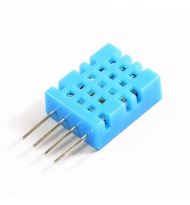
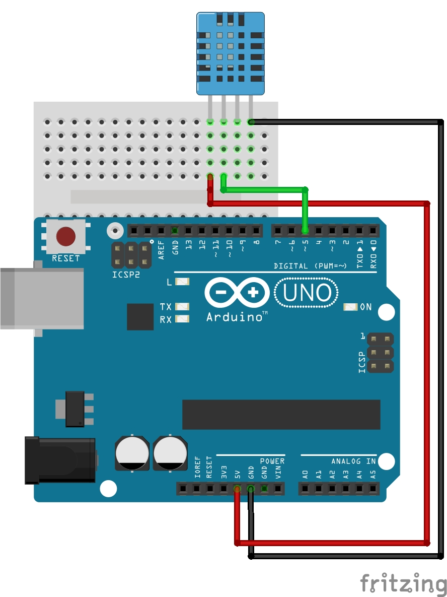

DHT11 Sensor de temperatura
Para este circuito vamos a necesitar:
- Sensor DHT11 
- Placa Arduino

- Cables dupont

- Led

El DHT11 es un sensor de temperatura y humedad que utiliza un sensor capacitivo de humedad y un termistor para medir el aire circundante, y muestra los datos mediante una señal digital en el pin de datos.
Lo primero que vamos a hacer, es conectar el sensor a los pines correspondientes
